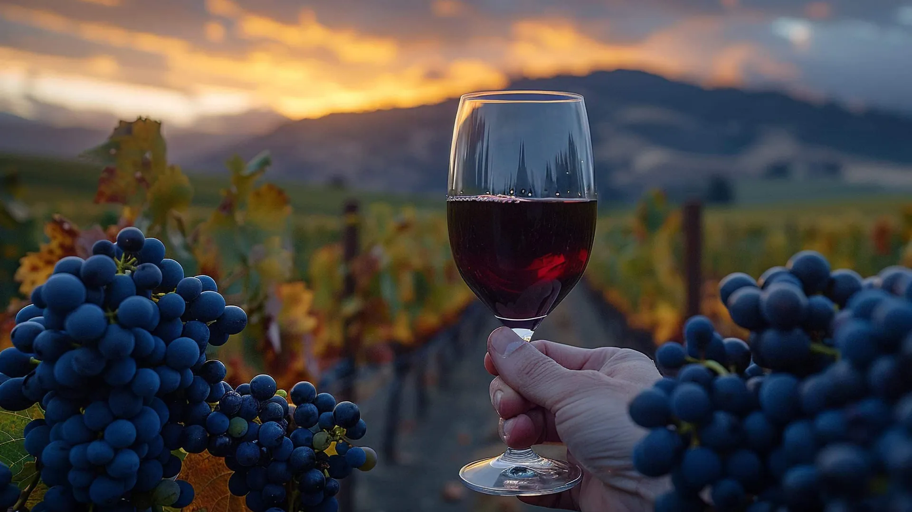
Descubrí el alma de las bodegas de Mendoza con locales que hablan tu idioma
Tours de vino y gastronomía en Luján de Cuyo, Maipú y Valle de Uco. Te buscamos por el hotel y te llevamos a las bodegas que elegimos nosotros.
- [puntaje] en Tripadvisor
- Guías en español, inglés y portugués
- Traslado desde tu hotel
Lo que nos hace distintos
Guía local trilingüe
Nacimos acá y te contamos Mendoza en español, inglés o portugués.
Transporte privado ida y vuelta
Te buscamos por tu hotel y te dejamos ahí al terminar. Sin manejar, sin horarios de colectivo.
Bodegas elegidas por nosotros
Visitamos cada bodega antes de recomendarla. Solo vas a las que nos gustan.
Itinerario a medida
Ajustamos bodegas, horarios y comidas a tu grupo y a tu ritmo.
Nuestros tours
Seis salidas para conocer Mendoza por sus vinos, su comida y su montaña. Tocá un tour para ver el itinerario completo.
-

Luján de Cuyo, tierra del Malbec
3 bodegas
Degustación en dos bodegas y almuerzo maridado en la tercera.
Desde USD [precio] por persona
-
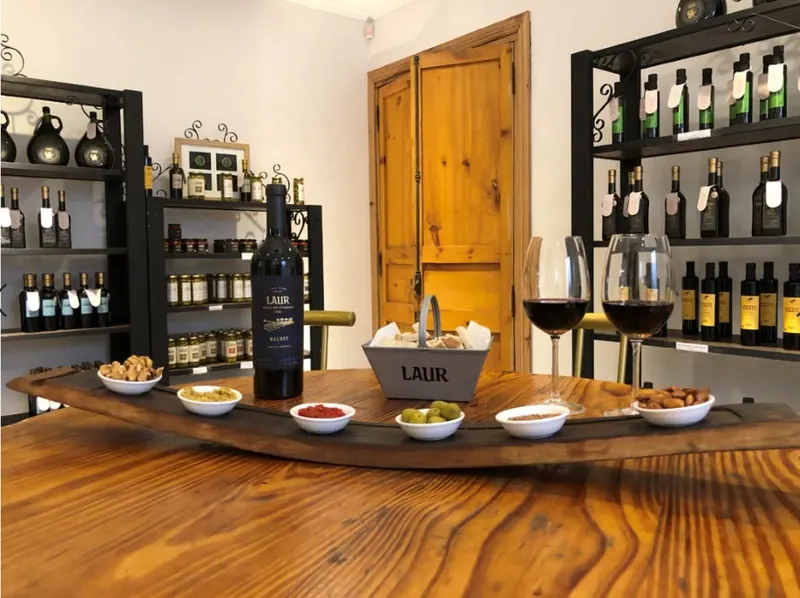
Maipú, cuna del vino
2 bodegas y 1 olivícola
Bodegas históricas y boutique, olivícola y almuerzo maridado.
Desde USD [precio] por persona
-
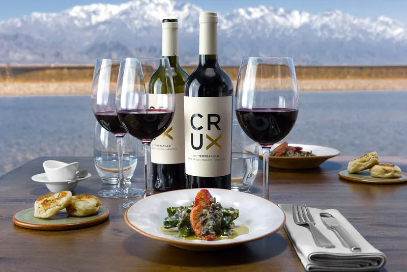
Valle de Uco, paisaje cordillerano
Bodegas premium
Bodegas premium y almuerzo gourmet con maridaje en restaurante de bodega.
Desde USD [precio] por persona
-
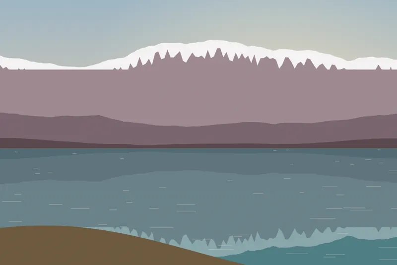
Potrerillos
Dique y montaña
Naturaleza y montaña junto al dique, parada panorámica y almuerzo liviano.
Desde USD [precio] por persona
-
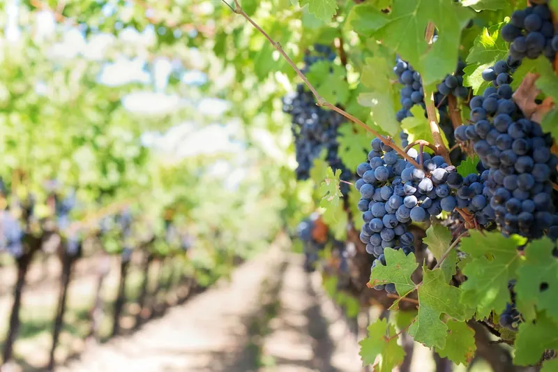
Salentein
1 bodega
Visita exprés a la bodega, degustación de 3 vinos y sala de arte.
Desde USD [precio] por persona
-
Los Toneles
Bodegas centenarias
Recorrido histórico por bodegas centenarias, con almuerzo.
Desde USD [precio] por persona
No hay tours con esos filtros.
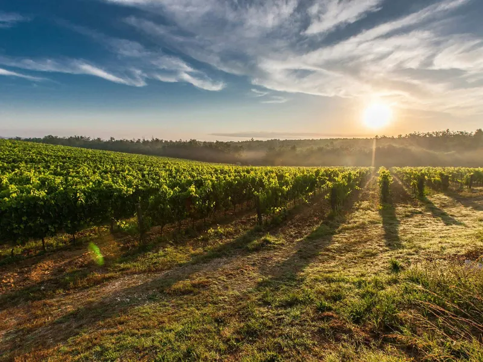
Armamos tu tour a medida
¿Querés combinar zonas, sumar una bodega en particular o ir a tu ritmo? Contanos qué te gusta, cuántos son y qué fecha tenés. Te proponemos un itinerario en el día.
Armar mi tour por WhatsAppCómo funciona
Reservar es simple y lo hacés desde el celular.
Nos escribís
Por WhatsApp o por el formulario. Contanos fecha, cantidad de personas y qué tour te interesa.
Confirmamos y reservás con una seña
Te confirmamos disponibilidad y precio final. Con una seña tu lugar queda asegurado.
Te pasamos a buscar por el hotel
El día del tour te buscamos por la puerta de tu hotel. Vos solo disfrutás.
Quiénes somos
Somos locales pero hablamos tu idioma.
Somos un equipo de guías nacidos en Mendoza. Conocemos las bodegas, la gente que hace el vino y los lugares donde comemos nosotros. [historia del equipo a completar]
Idiomas que hablamos
- Español
- English
- Português
![[foto real del guía a cargar]](assets/img/guide-1-sm.webp)
[nombre del guía]
[idiomas que habla]
![[foto real del guía a cargar]](assets/img/guide-2-sm.webp)
[nombre del guía]
[idiomas que habla]
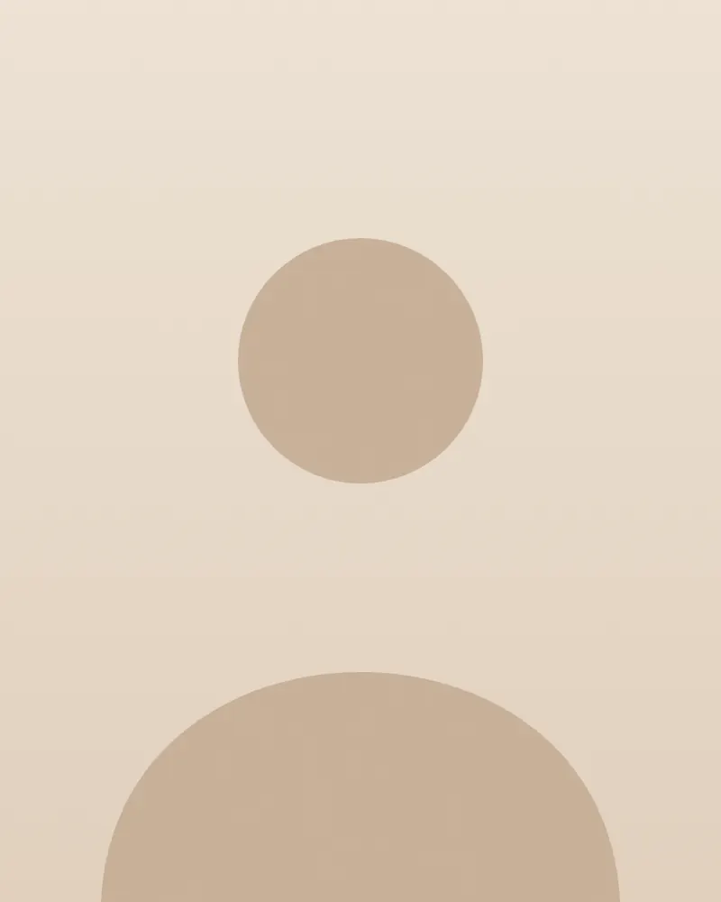
[nombre del guía]
[idiomas que habla]
Lo que dicen nuestros viajeros
Opiniones reales publicadas en Tripadvisor.
-
[puntaje] · Tripadvisor
[reseña real a cargar]
[nombre] [país] -
[puntaje] · Tripadvisor
[reseña real a cargar]
[nombre] [país] -
[puntaje] · Tripadvisor
[reseña real a cargar]
[nombre] [país]
Ver todas las opiniones en Tripadvisor [URL de Tripadvisor]
Brindis, mesas largas y montaña
Así se viven nuestros tours. Seguinos para ver las salidas de cada semana.
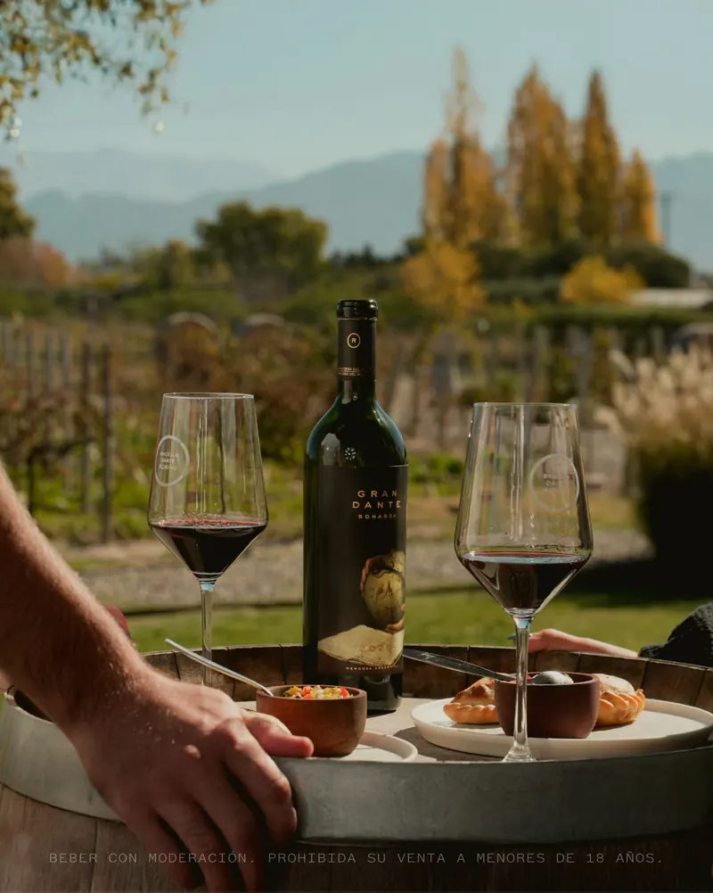
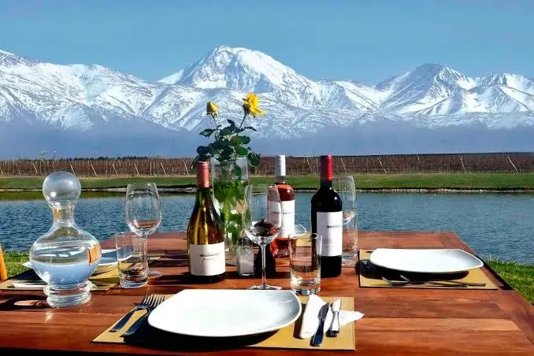
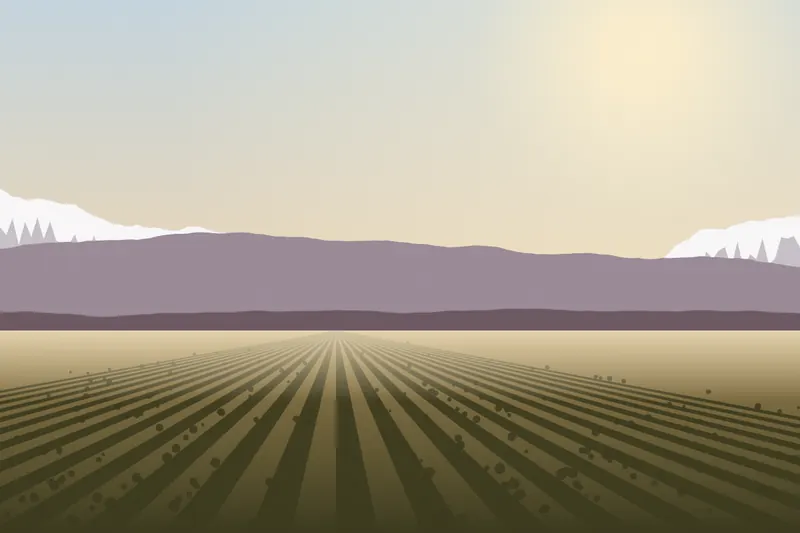
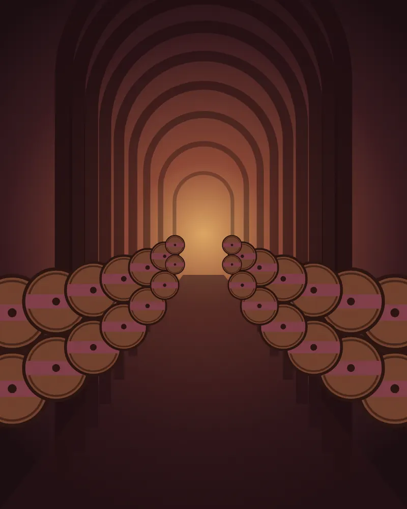
Preguntas frecuentes
¿Me pasan a buscar por el hotel?
Sí. Todos los tours incluyen traslado privado ida y vuelta: te buscamos y te dejamos en la puerta de tu hotel en Mendoza. [zonas de cobertura a confirmar]
¿Puedo ir con niños?
Sí. Para familias recomendamos Bonfanti y Tempus Alba, que son cómodas para ir con chicos. Avisanos las edades al reservar.
¿Tienen opciones vegetarianas?
Avisanos al reservar y lo coordinamos con cada bodega. [confirmar opciones vegetarianas, veganas y sin TACC]
¿Qué pasa si llueve?
Las visitas y degustaciones se hacen dentro de las bodegas, así que el tour sigue. [política ante mal tiempo a completar]
¿Qué medios de pago aceptan?
[medios de pago a completar]
¿Cuál es la política de cancelación?
[política de cancelación a completar]
¿Qué idiomas hablan los guías?
Español, inglés y portugués. Elegís el idioma al reservar.
Reservá tu tour
Completá el formulario y te respondemos con disponibilidad y precio. Si preferís, escribinos directo por WhatsApp.
- Medios de pago
- [medios de pago a completar]
- Política de cancelación
- [política de cancelación a completar]